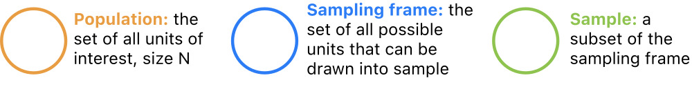
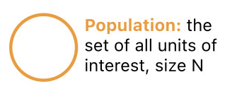
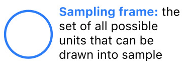
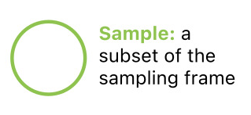
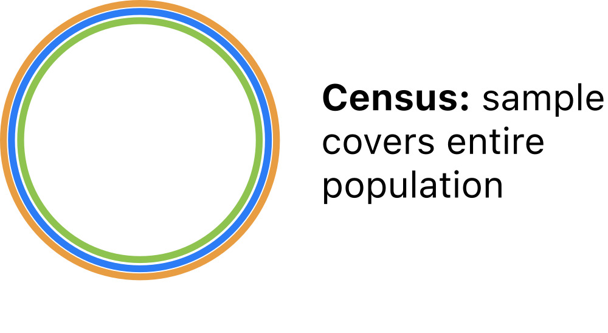
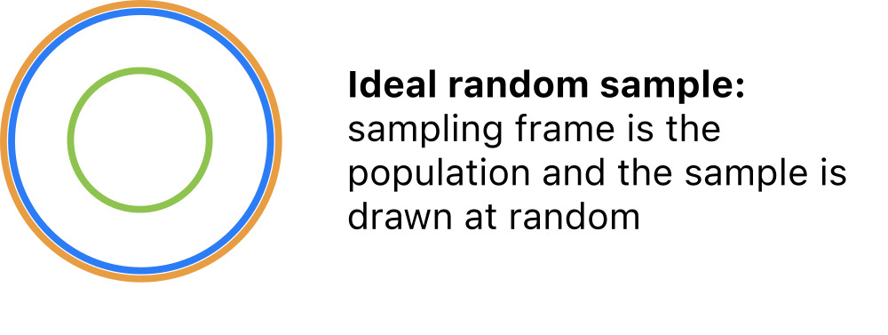
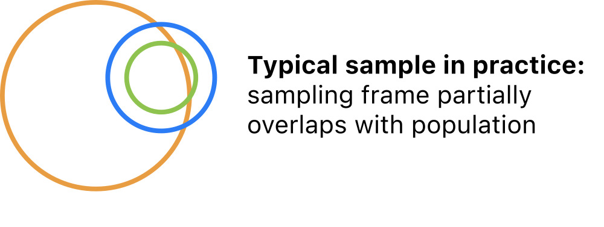
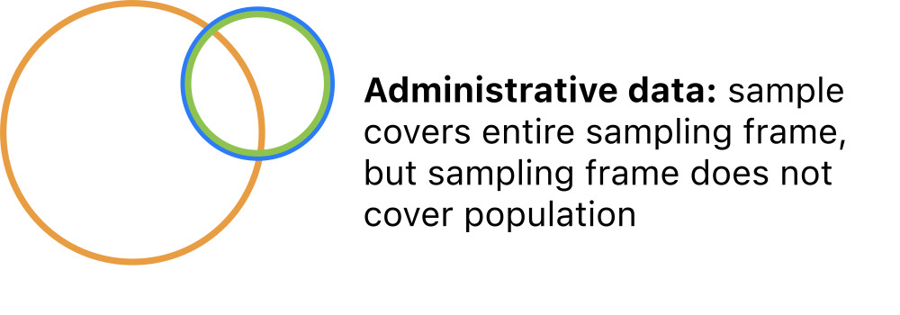
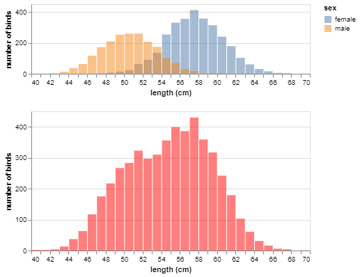

population mean: 54.73771716352954
sample mean: 56.567779534464016Objective: Enable you to critically assess data quality based on how it was collected.
Here we’ll introduce standard statistical terminology to describe data collection.
All data are collected somehow. A sampling design is a way of selecting observational units for measurement. It can be construed as a particular relationship between:

Last week, we introduced the terminology observational unit to mean the entity measured for a study – datasets consist of observations made on observational units.
In less technical terms, all data are data on some kind of thing, such as countries, species, locations, and the like.
A statistical population is the collection of all units of interest. For example:

There are usually some units in a population that can’t be measured due to practical constraints – for instance, many adult U.S. residents don’t have phones or addresses.
For this reason, it is useful to introduce the concept of a sampling frame, which refers to the collection of all units in a population that can be observed for a study. For example:

Finally, it’s rarely feasible to measure every observable unit due to limited data collection resources – for instance, states don’t have the time or money to call every phone number every year.
A sample is a subcollection of units in the sampling frame actually selected for study. For instance:

We can now imagine a few common sampling scenarios by varying the relationship between population, frame, and sample.
Denote an observational unit by \(U_i\), and let:
\[\begin{alignat*}{2} \mathcal{U} &= \{U_i\}_{i \in I} &&\quad(\text{universe}) \\ P &= \{U_1, \dots, U_N\} \subseteq \mathcal{U} &&\quad(\text{population}) \\ F &= \{U_j: j \in J \subset I\} \subseteq P &&\quad(\text{frame})\\ S &\subseteq F &&\quad(\text{sample}) \end{alignat*}\]
The simplest scenario is a population census, where the entire population is observed.
For a census: \(S = F = P\)
All properties of the population are definitevely known in a census. So there is no need to model census data.

The statistical gold standard for inference, modeling, and prediction is the simple random sample in which units are selected at random from the population.
For a simple random sample: \(S \subset F = P\)
Sample properties are reflective of population properties in simple random samples. Population inference is straightforward.

More common in practice is a random sample from a sampling frame that overlaps but does not cover the population.
For a ‘typical’ sample: \(S \subset F \quad\text{and}\quad F \cap P \neq \emptyset\)
Sample properties are reflective of the frame but not necessarily the study population. Population inference gets more complicated and may not be possible.

Also common is administrative data in which all units are selected from a convenient frame that partly covers the population.
For administrative data: \(S = F \quad\text{and}\quad F\cap P \neq \emptyset\)
Administrative data are not really proper samples; they cannot be replicated and they do not represent any broader group. No inference is possible.

The relationships among the population, frame, and sample determine the scope of inference: the extent to which conclusions based on the sample are generalizable.
A good sampling design can ensure that the statistical properties of the sample are expected to match those of the population. If so, it is sound to generalize:
A poor sampling design will produce samples that distort the statistical properties of the population. If so, it is not sound to generalize:
The sampling scenarios above can be differentiated along two key attributes:
If you can articulate these two points, you have fully characterized the sampling design.
In order to describe sampling mechanisms precisely, we need a little terminology.
Each unit has some inclusion probability – the probability of being included in the sample.
Let’s suppose that the frame \(F\) comprises \(N\) units, and denote the inclusion probabilities by:
\[ p_i = P(\text{unit } i \text{ is included in the sample}) \quad i = 1, \dots, N \]
The inclusion probability of each unit depends on the physical procedure of collecting data.
Sampling mechanisms are methods of drawing samples and are categorized into four types based on inclusion probabilities.
Annual observations of GDP growth for 234 countries from 1961 - 2018.
So:
This is administrative data with no scope of inference.
Phone surveys of 418K U.S. residents in 2019.
So:
This is a typical sample with narrow inference to adult residents with phone numbers.
Statistical bias is the average difference between a sample property and a population property across all possible samples under a particular sampling design.
In less technical terms: the expected error of estimates.
Two possible sources of statistical bias:
These are distinct from other kinds of bias that we are not discussing:
In Lab 2 you’ll explore sampling bias arising from sampling mechanisms. Here’s a preview:

Consider:
If inclusion probabilities are known or estimable it is possible to apply bias corrections to estimates using inverse probability weighting.
If
Then a bias-corrected estimate of the population mean is given by the weighted average:
\[ \sum_{i\in S} \left(\frac{p_i^{-1}}{\sum_i p_i^{-1}}\right) Y_i \]
Suppose we obtain a biased sample in which female hawks were 6 times as likely to be selected as males. This yields an overestimate:
population mean: 54.73771716352954
sample mean: 56.567779534464016But since we know the exact inclusion probabilities up to a proportionality constant, we can apply inverse probability weighting to adjust for bias:
# specify weights s.t. 6:1 female:male
weight_df = pd.DataFrame(
data = {'sex': np.array(['male', 'female']),
'weight': np.array([1, 6])})
# append weights to sample
samp_w = pd.merge(samp, weight_df, how = 'left', on = 'sex')
# calculate inverse probability weightings
samp_w['correction_factor'] = (1/samp_w.weight)/np.sum(1/samp_w.weight)
# multiply observed values by weightings
samp_w['weighted_length'] = samp_w.length*samp_w.correction_factor
# take weighted average
samp_w.weighted_length.sum()54.40928091743469However, even if we didn’t know the exact inclusion probabilities, we could estimate them from the sample:
And use the same approach:
# estimate factor by which F more likely than M
ratio = samp.sex.value_counts().loc['female']/samp.sex.value_counts().loc['male']
# input as weights
weight_df = pd.DataFrame(data = {'sex': np.array(['male', 'female']), 'weight': np.array([1, ratio])})
# append weights to sample
samp_w = pd.merge(samp, weight_df, how = 'left', on = 'sex')
# calculate inverse probability weightings
samp_w['correction_factor'] = (1/samp_w.weight)/np.sum(1/samp_w.weight)
# multiply observed values by weightings
samp_w['weighted_length'] = samp_w.length*samp_w.correction_factor
# take weighted average
samp_w.weighted_length.sum()54.082235672430265Inverse probability weighting can be applied to correct a wide range of estimators besides averages.
It is also applicable to adjust for bias due to missing data.
In principle, the technique is simple, but in practice, there are some common hurdles:
Missing data arise when one or more variable measurements fail for a subset of observations.
This can happen for a variety of reasons, but is very common in pratice due to, for instance:
Many researchers and data scientists ignore missingness by simply deleting affected observations, but this is bad practice! Missingness needs to be treated carefully.
It is standard practice to record observations with missingness but enter a special symbol (.., -, NA, etcetera) for missing values.
In python, missing values are mapped to a special float:
Here is some made-up data with two missing values:
| value | |
|---|---|
| obs | |
| 0 | -0.9286936933427271 |
| 1 | -0.3088381742999848 |
| 2 | - |
| 3 | -1.4345064041945543 |
| 4 | 0.03958917896644836 |
| 5 | - |
| 6 | -0.5316890502224456 |
| 7 | 1.4734842645335422 |
If we read in the file with an na_values argument, pandas will parse the specified characters as NaN:
NaNs halt calculations on numpy arrays.
However, the default behavior in pandas is to ignore the NaN’s, which allows the computation to proceed:
But those missing values could have been anything. For example:
So missing values can dramatically alter results if they are simply omitted from calculations!
In a nutshell, the missing data problem is: how should missing values be handled in a data analysis?
Getting the software to run is one thing, but this alone does not address the challenges posed by the missing data. Unless the analyst, or the software vendor, provides some way to work around the missing values, the analysis cannot continue because calculations on missing values are not possible. There are many approaches to circumvent this problem. Each of these affects the end result in a different way. (Stef van Buuren, 2018)
There’s no universal approach to the missing data problem. The choice of method depends on:
We won’t go too far into this topic in PSTAT 100. Our goal will be awareness-raising, specifically:
If you are interested in the topic, Stef van Buuren’s Flexible Imputation of Missing Data (the source of one of your readings this week) provides an excellent introduction.
Missing data mechanisms (like sampling mechanisms) are characterized by the probabilities that observations go missing.
For dataset \(X = \{x_{ij}\}\) comprising
denote the probability that a value goes missing as:
\[ q_{ij} = P(x_{ij} \text{ is missing}) \]
Data are missing completely at random (MCAR) if the probabilities of missing entries are uniformly equal.
\[ q_{ij} = q \quad\text{for all}\quad i = 1, \dots, n \quad\text{and}\quad j = 1, \dots, p \]
This implies that the cause of missingness is unrelated to the data: missing values can be ignored. This is the easiest scenario to handle.
Data are missing at random (MAR) if the probabilities of missing entries depend on observed data.
\[ q_{ij} = f(\mathbf{x}_i) \]
This implies that information about the cause of missingness is captured within the dataset. As a result:
Data are missing not at random (MNAR) if the probabilities of missing entries depend on unobserved data.
\[ q_{ij} = f(z_i, x_{ij}) \quad z_i \text{ unknown} \]
This implies that information about the cause of missingness is unavailable. This is the most complicated scenario.
Importantly, there is no easy diagnostic check to distinguish MCAR, MAR, and MNAR without measuring some of the missing data.
So in practice, usually one has to make an informed assumption based on knowledge of the data collection process.
In the GDP growth data, growth measurements are missing for many countries before a certain year.
We might be able to hypothesize about why – perhaps a country didn’t exist or didn’t keep reliable records for a period of time.However, the data as they are contain no additional information that might explain the cause of missingness.
So these data are MNAR.
The easiest approach to missing data is to drop observations with missing values: df.dropna().
Another simple fix is mean imputation, filling in missing values with the mean of the corresponding variable: df.fillna().
Imputing too many missing values distorts the distribution of sample values.
When data are MCAR or MAR, one can:
Do:
Don’t: